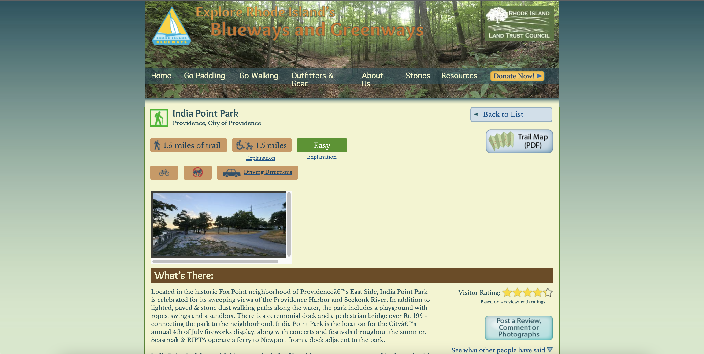

Responsive Redesign
Redesigning Explore RI.
Jump to: Overview • Finding Problems • Accessibility • Low-Fidelity • Visual Design Style Guide • High-Fidelity • Development
Overview
I decided to redesign this page from Explore Rhode Island,
which is the first Google search result for a popular park close to where I live.

The site provides critical information on directions, ADA accessibility, trail restrictions, and historical context all difficult to find elsewhere; all useful and unique information hindered by poor design.
Finding Problems
To assess the usability of the webpage, I completed a Cognitive Walkthrough of the webpage to experience the webpage through the eyes of the user.
To do this, I came up with a set of scenarios, keeping in mind a broad range of users with differing contexts and needs.
My scenarios included:
- Check if the park has wheelchair-friendly trails and ADA accessible parking
- Examine the distance and difficulty of the park’s trail.
- Figure out how to best get to the park across several modes of transport
- Return to the previous page
- Read and respond to other user-submitted comments and additions.
- Evaluate how others have rated the park.
- Submit a comment for review, then edit and cancel review of that comment.
- Send private feedback to the web admin.
- Learn the history and contextual details of the park.
- Plan trail routes for visiting the park ahead of time.
- Navigate to other sections of the website.
- Share specific content from the page to others.
- See how the park looks through pictures.
For each step of each scenario, I asked myself the following questions:
Will the correct action be sufficiently evident to the user?
Will the user notice that the correct action is available?
Will the user associate and interpret the response from the action correctly?
After going through these, I also went through Nielson’s 10 Heuristics to fuel my insights. I also accessed the website across phones, tablets, and desktops across varying window sizes and orientations.
I summarized my findings into 6 key points:
Scattered hierarchy and organization of information with related elements, such as transportation methods and trail maps, separated across the webpage. Running through different tasks made me scan back and forth and search in a very scattered, unorganized path.
Inconsistent affordances from interactive UI elements regarding their interactability and linked functions, while also lacking feedback upon toggling, hovering, and clicking, leading to possibility for errors in conflict with user’s conceptual model.
Undersized text, hyperlinks, and images create difficulty in legibility and interaction, the latter especially for users on touchscreens, using gloves, or with precision impairments.
Lack of responsiveness across differing devices. For example, on mobile, several UI elements break with overlapping elements and spacings hiding UI elements and decreasing legibility.
Significant visual clutter from overuse of differing colors and font-family/weight/size, alongside lack of contrast across UI and lack of white space creating unneeded density and lack of emphasis.
Inconsistent language and unaccompanied icons lead to confusion of park information.
Accessibility
I also examined the accessibility of this webpage using WebAIM WAVE to assess compatibility with screen readers, keyboard navigation, and on contrast with the following results:
- Lack of alternative text on a many key buttons and on all images of the park, and redundant alternative text on several images or alternative text tags with no content.
- Missing language descriptor.
- Very low contrast and size warnings on a significant amount of text on buttons and paragraphs.
- No page regions and no use of ARIA outside of linked Google maps widget.
- Skipped heading levels and smaller p tags styled to match larger headings.
- Most buttons lacking keyboard event handlers.
Judging from these findings, I would expect keyboard and/or screen reader navigation of this webpage to be extremely difficult, if not outright impossible. The only area I might disagree with is regarding low contrast, as some text contrast is still quite legible even on grayscale.
Low-Fidelity
I then created three Low-Fidelity wireframes for Desktop, Tablet, and Mobile sizes addressing the key issues I found:
Visual Design Style Guide
I then created the following visual design style guide. I focused on maintaining the emphasis on nature-inspired blues and greens that the original site had, while mixing in cleaner UI elements, sans-serif typography, and more interaction states.
High-Fidelity
I designed three separate high fidelity prototypes for Desktop (1440px wide), Tablet (768px wide), and Mobile (375px wide) with annotation for development.
Development
I developed a prototype of my redesign on the link below:
vegananteater125.github.io/responsive-redesign/